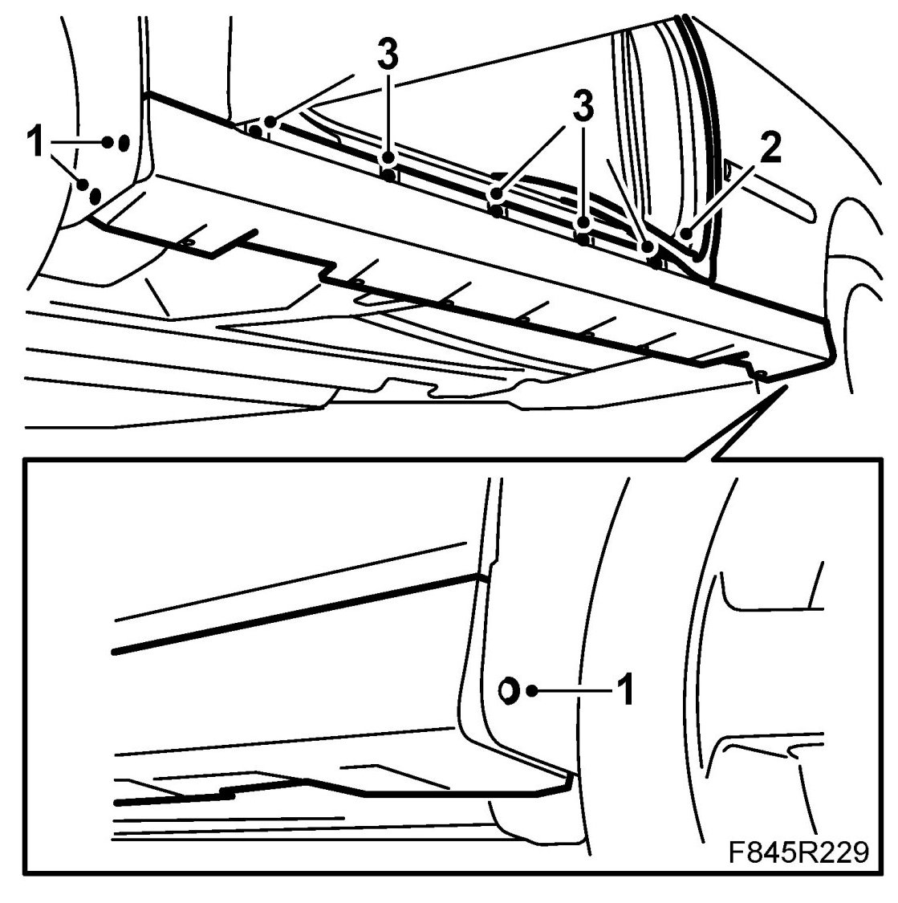
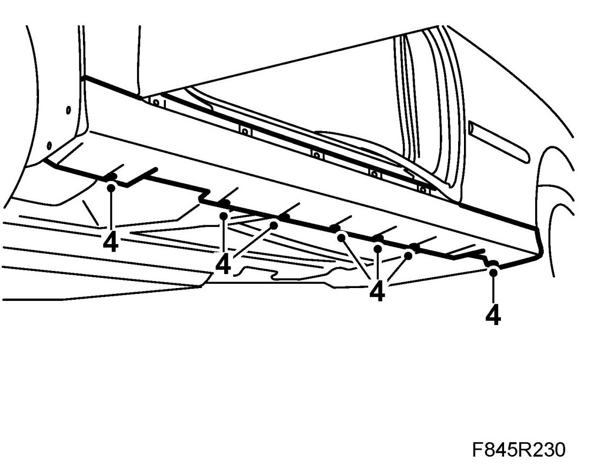
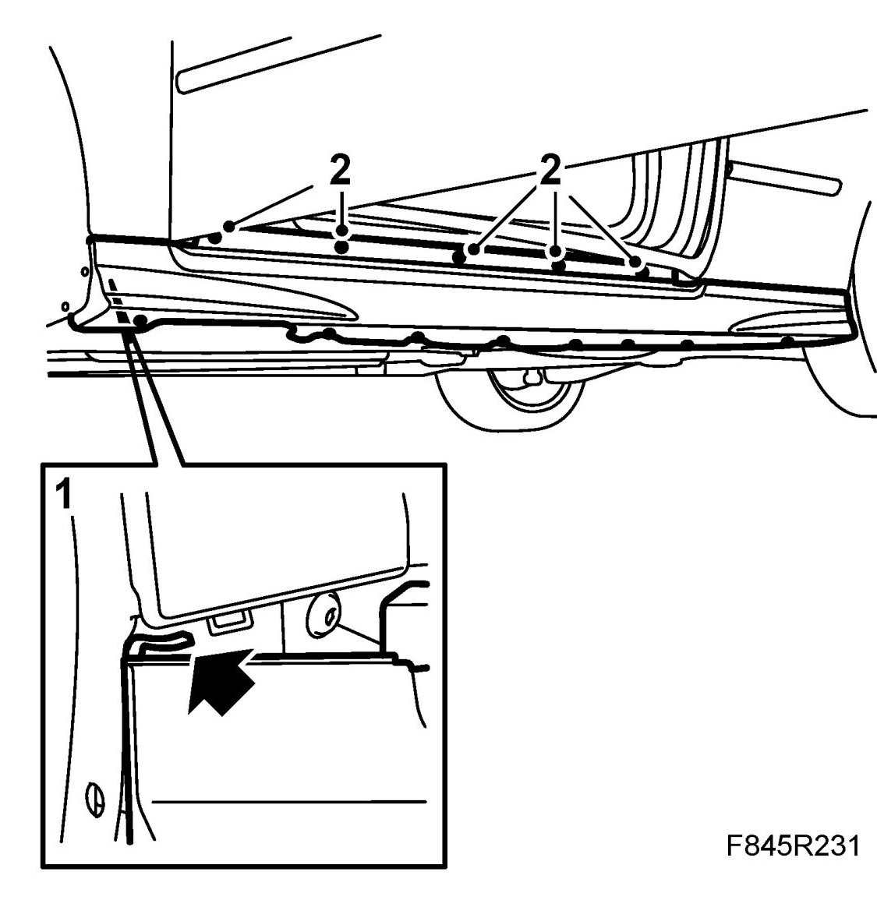
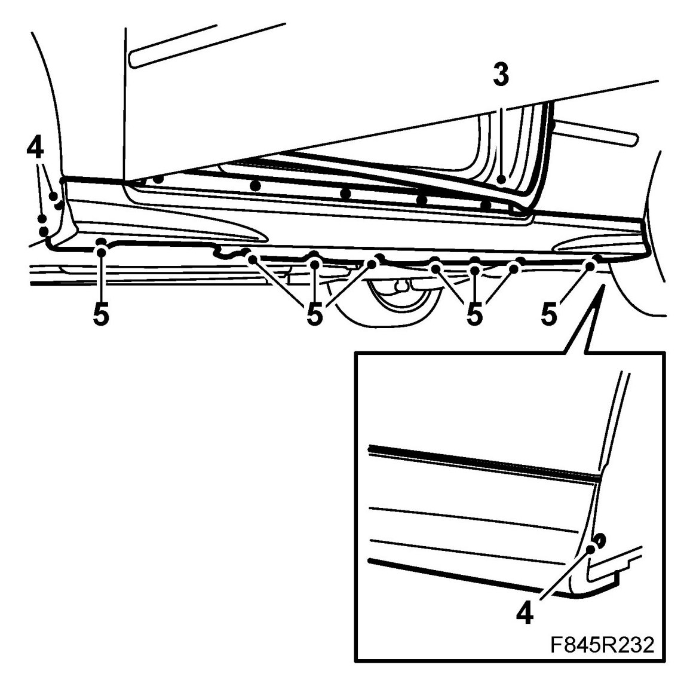

Sill Cover, CV
Sill Cover, CV
Removing
1. Remove the screws at the wheel housings.

2. Loosen the rubber sill cover moulding. Do not remove the rubber moulding from the front or rear wing.
IMPORTANT: Do not pull loose the rubber strip from the front wing as the wing liner will have to be removed before the rubber strip can be refitted.
3. Remove the sill cover bolts behind the rubber moulding.
4. Remove the clips by tapping out the centre pins. Pull the clips downwards.

5. Pull the rear edge of the sill cover loose and press the cover forwards in order to loosen the cover from the front wing. Mind the centre pins for the clips.
Fitting
1. Pull out the rear edge of the front wing liner. Hook the sill cover in the front wing and fasten the rear section.

2. Fit the bolts behind the rubber moulding.
3. Fasten the rubber moulding.

4. Fit the cover bolts at the wheel housings.
5. Fit the clips and tap in the centre pins. Check the sill cover alignment.